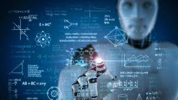

O que é machine learning - ML?

Machine learning é um subconjunto da inteligência artificial que permite que um sistema aprenda e melhore de maneira autônoma usando redes neurais e aprendizado profundo, sem ter sido programado explicitamente para isso, ao ser alimentado com grandes quantidades de dados.
O aprendizado de máquina permite que os sistemas de computador se ajustem e se aperfeiçoem continuamente à medida que acumulam mais "experiências". Assim, o desempenho desses sistemas pode ser melhorado, fornecendo conjuntos de dados maiores e mais variados para processamento.
A importância do machine learning
A taxa de geração de dados está acelerando, criando mais dados do que nunca, e o machine learning ajuda a analisar e encontrar valor nessa vasta quantidade de dados. Por isso, o machine learning está abrindo um novo horizonte do que os humanos podem fazer com computadores e outras máquinas. O machine learning ajuda as empresas com funções importantes, como detecção de fraudes, identificação de ameaças à segurança, personalização e recomendações, atendimento ao cliente automatizado por meio de chatbots, transcrição e tradução, análise de dados e muito mais. O aprendizado de máquina também está impulsionando a inovação empolgante do futuro, como veículos autônomos, drones e aviões, realidade aumentada e virtual e robótica.
Como funciona o machine learning?
O machine learning treina algoritmos em conjuntos de dados para alcançar um resultado esperado, como identificar um padrão ou reconhecer um objeto. Machine learning é o processo de otimização do modelo para que ele possa prever a resposta correta com base nas amostras de dados de treinamento.
Supondo que os dados de treinamento sejam de alta qualidade, quanto mais amostras de treinamento o algoritmo de machine learning receber, mais preciso será o modelo. O algoritmo ajusta o modelo aos dados durante o treinamento, no que é chamado de "processo de ajuste". Esse processo envolve o uso de uma função de perda para medir os erros do modelo e uma técnica de otimização, como o gradiente descendente, para ajustar os parâmetros do modelo e minimizar esses erros. Quando o resultado não corresponde ao esperado, o algoritmo é treinado repetidamente até gerar uma resposta precisa. Essencialmente, o algoritmo aprende com os dados e alcança resultados com base na adequação da entrada e da resposta a uma linha, cluster ou outra correlação estatística.
Vantagens do machine learning
Reconhecimento de padrões
Quanto mais dados forem consumidos por um algoritmo de machine learning, melhor será a capacidade de encontrar tendências e padrões nesses dados. Por exemplo, um site de e-commerce pode usar machine learning para entender como as pessoas compram e aproveitar essas informações para oferecer recomendações melhores ou encontrar dados de tendências que podem levar a oportunidades de novos produtos.
Automação
O machine learning e a inteligência artificial podem eliminar grande parte do trabalho monótono dos trabalhadores humanos. Utilitários como a automação de processos robóticos podem realizar algumas das tediosas tarefas de negócios que impedem as pessoas de realizar trabalhos mais significativos. Os algoritmos de visão computacional e detecção de objeções podem ajudar os robôs a escolher e embalar itens de uma linha de montagem. O machine learning sempre ativado para detecção de fraudes e avaliação de ameaças pode encontrar falhas de segurança antes que elas se tornem um problema.
Possíveis desafios do machine learning
Potencial de viés
Muitas vezes, o desempenho do machine learning depende dos dados fornecidos. Se um algoritmo de machine learning for alimentado com um conjunto de dados enviesado, ele vai fornecer resultados enviesados.
Aquisição de dados
O machine learning pode precisar de muitos dados para ser útil. Como muitos casos de uso de machine learning são baseados em aprendizado supervisionado, adquirir e limpar dados estruturados para treinar os algoritmos é uma primeira etapa importante, o que pode ser difícil se os dados estiverem em vários locais isolados dentro de uma organização.
Conhecimentos técnicos necessários
Enquanto o machine learning, a inteligência artificial e os fornecedores de nuvem tentam facilitar ao máximo a configuração e a execução de algoritmos de machine learning, as organizações geralmente precisam de programadores e cientistas de dados para entender e utilizar os algoritmos de treinamento e os resultados deles.